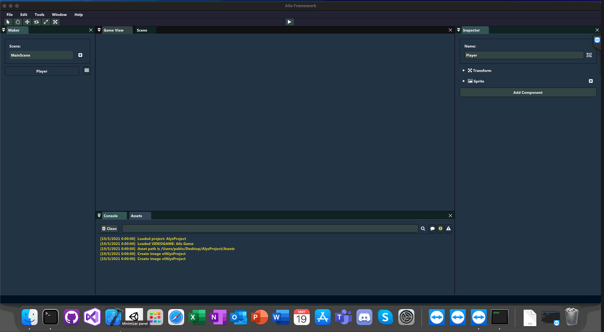
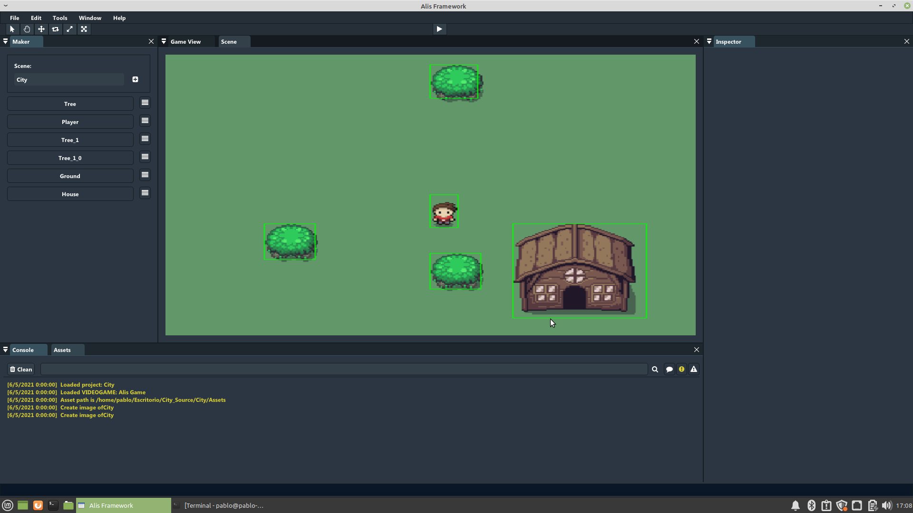
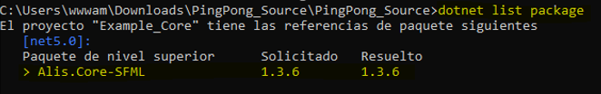
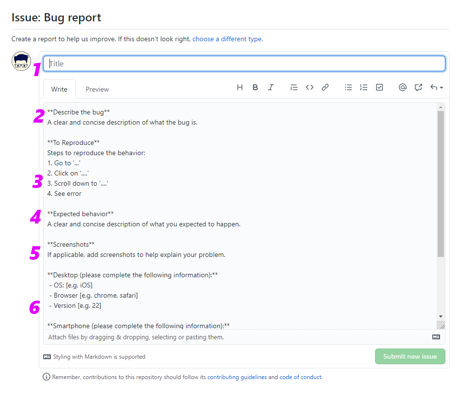

|
Alis Framework
1.3.6
Develop the video games of your dreams.
|


|
|
Alis Framework
1.3.6
Develop the video games of your dreams.
|
|
El objetivo de este capítulo es ofrecer un manual de usuario que permita entender todos los aspectos relevantes del framework, a la vez que poder ofrecer una guía de acceso rápida para empezar a desarrollar tu videojuego.
Antes de empezar con la instalación Alis, se debe de confirmar que tiene instalado en su ordenador una versión igual o superior a .NET CORE 5.0.
Una vez abierta la terminal o consola de comandos, se deberá introducir el siguiente comando:
``` {.java language="Java" frame="trBL" caption="Comando dotnet para visualizar los sdks instalados."} dotnet –list-sdks ```
En caso de que tengas .NET Core instalado, debería de aparecer esto:
 {fig:logos width="50%"}
{fig:logos width="50%"}
En caso de tener una versión inferior de .NET CORE 5.0, de aparecer un mensaje de error indicando que "no se reconoce el comando" o aparecer otro tipo de error, se deberá de instalar la versión más reciente posible.
Para facilitar el proceso de instalación se ha preparado la siguiente tabla. Donde se incluye un botón de descarga directa del instalador necesario para continuar el proceso.
::: {.center} ::: {.tabular} | c | c | |c| Descarga la última versión de .NET CORE 5 \
Versión 5.0.2 & Descargar\
Windows &
\ MacOS &
\ Linux(Debian) &
\ ::: :::
Llegados a este punto, ya tendríamos instalado y configurado .Net Core 5.
Para la correcta instalación del Editor es indispensable tener instalado y configurado .Net Core 5. Además, el proceso de instalación del Editor puede variar dependiendo del sistema operativo donde nos encontremos (Windows, MacOS, Linux).
Si desea trabajar con el sistema operativo Windows, se recomiendo utilizar la versión de Windows 10 en adelante. Además, es necesario tener actualizado el equipo, y disponer de las últimas versiones de los drivers de su tarjeta gráfica instalados.
Una vez abierta la consola deberemos de lanzar el siguiente comando:
``` {.java language="Java" frame="trBL" caption="Comando para abrir la herramienta de diagnóstico de DirectX"} dxdiag ```
Si todo marcha correctamente deberá de salir una ventana indicando la versión DirectX que tenemos actualmente instalada.
 {width="70%"}
{width="70%"}
El siguiente paso en la instalación del Editor, será descargar la última versión disponible. Se ha preparado el siguiente botón para facilitar la descarga:
(*) Existe la posibilidad que su navegador, active un bloqueo durante la descarga. Esto es algo normal, solo debe de hacer click en 'continuar' y el proceso continuará con normalidad.
Llegado a este punto, debe existir una carpeta llamada 'Alis Editor Windows'. Una vez dentro, de dicha carpeta, debe de aparecer un archivo llamado 'Alis.exe'. Al hacer doble click sobre dicho archivo se debería de abrir el Editor de Alis mostrando lo siguiente:
 {width="90%"}
{width="90%"}
En caso de utilizar un equipo con MacOS, se recomienda tener las últimas actualizaciones del sistema instaladas, tener instalado XCODE y activar la opción 'confiar en desarrolladores o aplicaciones de terceros' en su panel de 'seguridad y privacidad'.
Por otra parte, para facilitar la instalación del entorno de trabajo se utilizará un gestor de paquetes denominado 'brew'. Para instalar este gestor de paquetes se debe lanzar el siguiente comando en una terminal:
``‘ {frame="trBL" caption="Comando para instalar 'brew’"} /bin/bash -c '$(curl -fsSL https://raw.githubusercontent.com/Homebrew/install/HEAD/install.sh)' ```
Cuando finalice el proceso de instalación se podría probar que se ha instalado correctamente ejecutando:
``‘ {.java language="Java" frame="trBL" caption="Comando para verificar la correcta instalación de 'brew’"} brew doctor ```
Si todo se ha configurado correctamente, se deberá de instalar los siguientes paquetes:
``` {.java language="Java" frame="trBL" caption="Comando para instalar SFML Y CSFML"} brew csfml brew sfml ```
Una vez finalice el proceso de descarga, debería de aparecer una carpeta que dice 'Alis Editor Mac'. Se recomienda moverla al escritorio, pulsar el botón derecho del ratón, seleccionar la opción 'abrir terminal en carpeta' y ejecutar el siguiente comando:
``` {.java language="Java" frame="trBL" caption="Comando para ejecutar Alis Editor en MacOS"} ./Alis ```
{width="90%"}
En caso de querer trabajar en una plataforma Linux, se recomienda trabajar con una distribución basada en Debian. Además se puede dar el caso de que la instalación se convierta en un verdadero desafío, es por ello por lo que se recomienda descargar la siguiente script de instalación.
Para ejecutar el instalador y empezar el proceso de configuración, se debe de abrir una terminal y lanzar los siguientes comandos:
``` {.java language="Java" frame="trBL" caption="Comandos para ejecutar instalador de Alis Editor en Debian"} sudo chmod 777 ./Debian_Install_Environment.sh sudo ./Debian_Install_Environment.sh ```
Una vez finalice el proceso de instalación, se recomienda hacer la siguiente validación, lanzando en una terminal este comando:
``‘ {frame="trBL" caption="Comando para saber la versión de OpenGL instalada en su sistema"} glxinfo | grep 'OpenGL version’ ```
Si OpenGL está correctamente instalado, debería de mostrar en la consola una versión igual o superior a OpenGL 3.0+:
{width="90%"}
Para finalizar, se debe de abrir una terminal en la carpeta recientemente descomprimida, y lanzar el siguiente comando:
``` {.java language="Java" frame="trBL" caption="Comando para ejecutar Alis Editor en Linux"} ./Alis ```
Si todo se ha configurado e instalado correctamente se verá lo siguiente:
{width="90%"}
En caso de querer trabajar con Alis sin tener que utilizar el Editor, existe la posibilidad de añadir el core y/o tools a tu proyecto de visual studio.
Ejecutando el siguiente comando en una terminal dentro del directorio de trabajo. Se configuraría todo tu proyecto para poder acceder a la funcionalidad del núcleo.
Por otra parte, si solo deseas utilizar las herramientas que ofrece alis, tendrías que lanzar el siguiente comando:
También puedes descargar directamente el paquete aquí:
::: {.center} ::: {.tabular} | c | c | |c| Descarga los paquetes de Alis \
Paquete Nuget & Descargar\
Core &
\ Tools &
\ ::: :::
Si quieres confirmar que todo se ha instalado correctamente puedes lanzar los siguientes comandos en el directorio donde se encuentra tu proyecto:
En caso de estar todo correctamente instalado y configurado debería de aparecer esto:
{width="90%"}
Antes de poder empezar a desarrollar un videojuego en Alis, se debe de tener claros los siguientes aspectos.
Un videojuego está compuesto de uno o múltiples escenarios denominados 'Scenes'. Una escena o 'Scene', está compuesto por uno o múltiples objetos denominados 'GameObjects'.
Un GameObject es un elemento del videojuego que se encuentra dentro de un escenario y que contiene componentes que le atribuyen características especiales que lo definen y diferencian del resto.
El transform es una propiedad especial de los gameobjects que representa su posición, rotación y escala de tamaño.
Un componente o 'Component' representa una característica especial de un gameobject. En Alis existen 5 componentes implementados que permiten agilizar el desarrollo. Aunque también es posible crear tus propios componentes.
El editor de Alis ofrece un entorno de trabajo multiplataforma (Windows MacOS y Debian), facilitando en gran medida la conexión de los elementos que forman un videojuego.
Lo primero que veremos al iniciar el editor es una ventana que nos indica lo siguiente:
 {width="60%"}
{width="60%"}
El editor incluye diversos 'widgets' separados en distintas ventanas, donde cada uno tiene una función especifica que se explicará a continuación:
Con 'Maker' se puede ver el contenido del escenario que estás construyendo.
Con 'Inspector' podrás ver y editar los componentes que forman un 'GameObject'. Incluso te permite añadir tus propios componentes personalizados.
'Assets' es uno de los widgets con más relevancia de la aplicación, porque será el encargado de gestionar los recursos del juego.
El 'Scene' o escenario te permite previsualizar el contenido de la escena que estés editando.
Con 'Game view' se puede probar el juego durante su construcción, sin tener que exportar el juego cada vez que se necesite probar.
El 'console' o consola, se encarga de mostrar los mensajes que devuelve el Editor mientras se está trabajando.
Reproductor de audio integrado en el Editor que te permite escuchar cualquier sonido que se encuentre dentro de la carpeta 'Assets'.
En el menú superior del Editor encontraremos funcionalidades que serán de interés durante el desarrollo del proyecto.
El menú inferior, es un menú auxiliar que muestra información de interés. Puede mostrar un mensaje cuando se está exportando el juego, cuando se ha guardado el proyecto, cuando se produce un error, etc.
El editor incluye un sistema de gestión de ventanas o 'widgets manager', que permite personalizar al máximo nuestro entorno de trabajo. Se ofrece la posibilidad de configurar el tamaño, forma y posición de las ventanas. Para ello bastaría con seleccionar una ventana y arrástrala de lugar, donde aparecerán unas sombras (en este caso azules claros), indicando posibles lugares donde posicionar la ventana.
 {width="90%"}
{width="90%"}
El core o núcleo de Alis incluye todo lo necesario para construir tu propio videojuego. Para ello cuenta con una API fluent que facilita la integración de los distintos elementos y también incluye varios componentes predefinidos para facilitar el desarrollo.
Para crear un proyecto con Alis, utilizando el Core únicamente, es muy sencillo. Tan solo con 5 comandos se puede tener listo un proyecto en visual studio 2019.
Una vez finalice el proceso, debería de aparecer en la consola un "Hello World". A continuación, se debería de probar que todo funciona correctamente añadiendo lo siguiente en el archivo "Program.cs" recientemente creado.
Si todo está correctamente configurado e instalado debería de aparecer lo siguiente:
 {width="70%"}
{width="70%"}
Si es tu primera vez utilizando visual studio 2019 o simplemente te apatece empezar con un proyecto base, se ha preparado un ejemplo completo que incluye el juego clásico de 'Ping Pong'.
Las herramientas que ofrece Alis, son un conjunto de diversas funcionalidades que de una forma u otra aumentarán la productividad, reduciendo tiempo en el desarrollo. Es por ello por lo que se ha optado por desacoplarlas completamente del framework y de ser necesario se pueden incorporar en cualquier otro proyecto sin necesidad de cargar el framework completo.
La persistencia de datos es un elemento importantísimo en nuestros videojuegos, siempre será necesario guardar determinados datos y esto puede suponer en ocasiones un verdadero reto. Alis propone dos herramientas que te permitirán gestionar tus datos tanto en local como en la nube.
Con esta herramienta puedes guardar y acceder a cualquier tipo de información en local, ya sea un objeto primitivo o compuesto, puedes encriptar la información y todo ello en tiempo de ejecución sin afectar al rendimiento del videojuego.
Esta herramienta es muy parecida a 'LocalData', con la diferencia que gestiona datos en la nube. Por ahora es solo compatible con Dropbox, y tiene de especial que permite la subida y descarga de archivos de amanera asíncrona con lo cual no debería de afectar al rendimiento del videojuego.
En la actualidad, son cada vez más los videojuegos que podemos encontrarnos traducidos a distintos idiomas. Durante el desarrollo de estos proyectos es complicado introducir varios idiomas si no se tuvo en cuenta desde un inicio. Por este motivo se propone la siguiente herramienta:
Con esta herramienta podrás tener un sistema centralizado de gestión de los idiomas de tu videojuego. Y gracias a su incorporación de eventos en tiempo de ejecución podrás cambiar de idioma de manera casi inmediata.
La seguridad en tus videojuegos es algo a tener en cuenta, ya que siempre existirá personas que intenten vulnerar la seguridad de tu proyecto con el objetivo de hacer las denominadas "trampas o hacks". Por eso se ofrece las siguientes herramientas:
Herramienta que te ofrece varios sistemas de encriptado para usarlos cuando los necesites sin tener que invertir tiempo en investigar y desarrollarlos tu mismo.
Es una herramienta ideal para evitar que puedan acceder a datos en memoria RAM, ya que te permite guardar datos encriptados en memoria RAM y acceder a ellos cuando se necesite.
Gestionar los recursos de tu videojuego puede ser un verdadero problema, sobre todo cuando se trata de juegos multiplataforma que se comunicarán de diferentes maneras con sus respectivos sistemas operativos. Por este motivo se ha creado la siguiente herramienta.
Con esta herramienta puedes localizar cualquier recurso de tu videojuego, que se encuentre en la carpeta 'assets', pasandole el nombre del recurso.
Con esta herramienta accederemos a todos los directorios de interés del sistema de ejecución, permitiendo en tan solo una línea obtener lo que necesitamos.
En ocasiones debemos de empaquetar archivos o recursos de nuestros videojuegos. Un caso habitual es generar un archivo comprimido de la partida guardada para luego usarla o incluso subirla a un servidor. Estas tareas de gestión de archivos se pueden convertir en un problema cuando hablamos de proyectos multiplataforma. Alis ofrece la siguiente herramienta:
Herramienta preparada para comprimir o descomprimir archivos en formato '.zip' de manera síncrona o asíncrona.
Saber que ocurre en cada momento durante el desarrollo de un videojuego, es algo tedioso y a veces puede suponer un esfuerzo innecesario, si se hubiera planteado desde el principio. Por este motivo Alis facilita la siguiente herramienta:
Esta herramienta te permite controlar las trazas del proyecto. Con 'Logger' podrás realizar mensajes multinivel (log, warning, info o critical), guardar toda las salidas en un fichero y configurar varios niveles dependiendo de lo que se necesite.
Crear un manual que permita a todos los usuarios aprender a utilizar Alis, es una tarea compleja y que implica varios factores como puede ser el conocimiento previo del usuario, el vocabulario técnico, etc. Es por ello que se han diseñado distintas alternativas para contribuir y ofrecer una ayuda adicional en el proceso de aprendizaje.
Durante la fase de pruebas e incluso después de su publicación aparecieron un conjunto de cuestiones que se repetían con frecuencia, es por este motivo, que se ha optado por incluir esta sección dentro del manual.
La respuesta es no. Actualmente se está trabajando en buscar una solución para los usuarios que utilicen la versión de visual studio 2017.
La respuesta es sí y no. Si estás trabajando únicamente con el Core o las Tools no debería de existir problemas al momento de migrar a una nueva versión. Sin embargo, si estabas trabajando con una versión anterior del Editor, todavía no existe la capacidad de migrar tu proyecto a la versión más reciente.
Algunos usuarios reportan que al intentar cargar un proyecto de ejemplo no pueden e incluso se cierra el Editor. En estos casos se recomienda abrir el archivo "Project.json" que se encuentra dentro del proyecto y actualizar los directorios que aparecen con el directorio que se encuentra ahora mismo el proyecto.
La respuesta es sí. Desde un primer momento se tuvo en cuenta esta posibilidad, permitiendo en la actualidad poder utilizar las tools en cualquier proyecto software, incluso si no se trata de un videojuego.
La respuesta es sí y no. Por una parte, es cierto que siempre es conveniente saber al menos un poco de programación para sacarle el máximo partido posible al framework. Sin embargo, si tu caso es el de una persona que no sabe absolutamente nada de programación no te preocupes, ya que en la comunidad te podremos ayudar en lo que necesites y existen varios ejemplos preparados para facilitarte la tarea.
En la web oficial del proyecto se puede encontrar un resumen completo, desglosando todas las características del framework a nivel de código fuente. Esto puede ser de ayuda para las personas, que tengan un conocimiento básico o superior de programación, ya que se encuentra estructurado todo el código fuente y puedes visualizar explicaciones completas de todos los métodos, clases, estructuras de datos, etc.
En la actualidad, son cada vez más los proyectos de software que incluyen un contenido audiovisual a modo de tutoriales, que facilitan a los usuarios la tarea de aprendizaje, ya que se pueden ver casos prácticos y de funcionamiento mucho más llamativos que a través de otro tipo de fuentes. En este proyecto se ha optado por crear una serie de tutoriales en YouTube, tanto en español como en inglés, de la última versión disponible de Alis.
Al ser un proyecto que está en continuo crecimiento es normal que puedan surgir dudas o problemas derivados de nuevas versiones u otros temas, es por esto, que te facilitamos distintas formas de comunicación directa para que en ningún momento te sientas solo y puedas recibir la ayuda que necesites.
Desde un inicio se ha escuchado a la comunidad y es algo que seguiremos haciendo, por ello, te ofrecemos una sección llamada "discussions" a modo de foro público donde podrás realizar todo tipo de consultas.
En la página oficial del proyecto existe una sección llamada 'Discussions'. En dicha sección se puede participar en los distintos hilos del foro que se encuentren abiertos o se puede crear un hilo nuevo de la siguiente forma:
 {width="90%"}
{width="90%"}
Tal y como se puede ver en la imagen anterior, existe un botón de color verde que dice 'New discussion'. Al pulsar dicho botón se mostrará un formulario que deberá de rellenarse de la siguiente manera:
 {width="90%"}
{width="90%"}
En esta imagen se puede observar el formato de un formulario para realizar una nueva participación en el foro.
Como es normal, siempre puede ocurrir un fallo o error por parte del software que nos perjudica en la interacción con este. Por este motivo se ha preparado un panel de incidencias donde puedes abrir un canal de comunicación directo con el desarrollador para que en el menor tiempo posible dicho problema se pueda solucionar.
En la página oficial del proyecto existe una sección llamada 'Issues'. En dicha sección se puede reportar incidencia que se encuentren utilizando Alis.
 {width="90%"}
{width="90%"}
Tal y como se puede observar en la imagen anterior, existe un botón llamado 'New issue' que te permite crear una nueva incidencia. Después te pedirá que selecciones el tipo de incidencia que te gustaría reportar:
{width="90%"}
Y una vez decidas que tipo de incidencia te gustaría reportar, solo te quedaría rellenar el formulario. Dicho formulario ya incluye una plantilla preparada para que simplemente rellenes lo que necesitas.
{width="90%"}